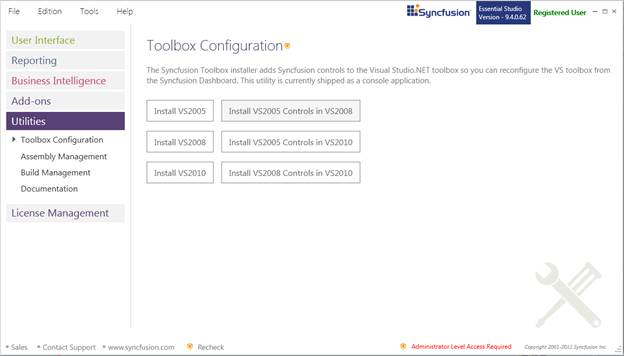
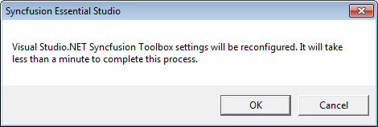
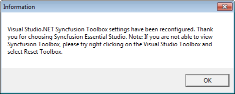

The Syncfusion Toolbox Installer adds the Syncfusion controls into the Visual Studio .NET toolbox. This utility is currently shipped as a console application.
Configuring Toolbox
1. Open Syncfusion Dashboard.
2. Click Utilities > Toolbox Configuration.

Figure 115: Toolbox Configuration
3. Select the required option.
The following options are available Toolbox Configuration:
· Install VS2005 – Configures Framework 2.0 Syncfusion controls in VS 2005 toolbox.
· Install VS2008 – Configures Framework 3.5 Syncfusion controls in VS 2008 toolbox.
· Install VS2010 – Configures Framework 4.0 Syncfusion controls in VS 2010 toolbox.
· Install VS2005 Controls in VS2008 – Configures Framework 2.0 Syncfusion controls in VS 2008 toolbox.
· Install VS2005 Controls in VS2010 – Configures Framework 2.0 Syncfusion controls in VS 2010 toolbox.
· Install VS2008 Controls in VS2010 – Configures Framework 3.5 Syncfusion controls in VS 2010 toolbox.
4. The Syncfusion Essential Studio dialog will open. Click OK.

Figure 116: Syncfusion Essential Studio Dialog
5. The Information dialog will open. Click OK.

Figure 117: Information
 Note:
Note:
· You need to reset the toolbox if the installed controls are not reflected properly in the Toolbox.
· This tool will configure only the controls which are located under Installed Location]\Assemblies\ {Framework version}.